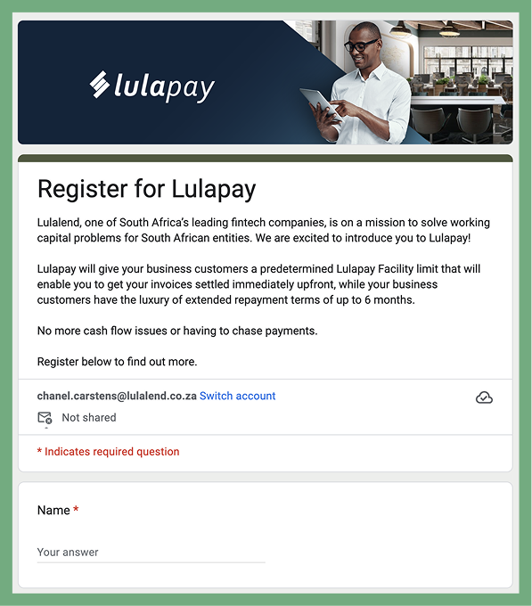
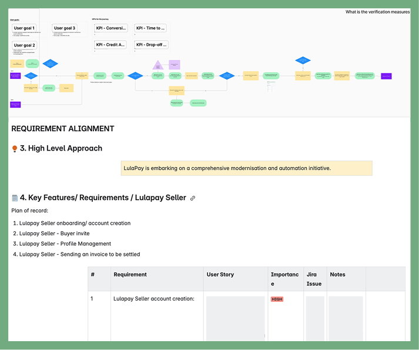
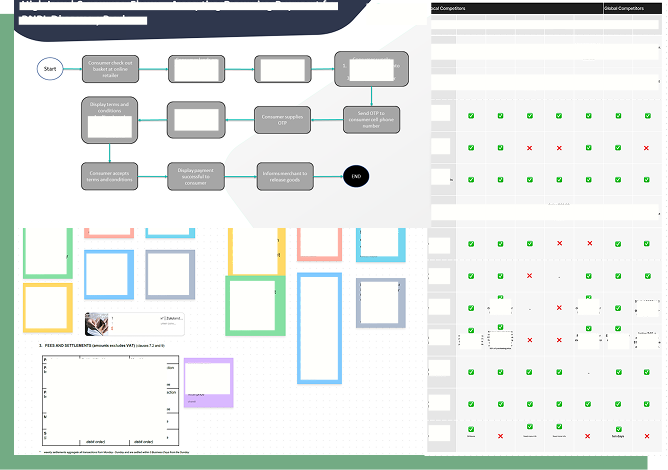
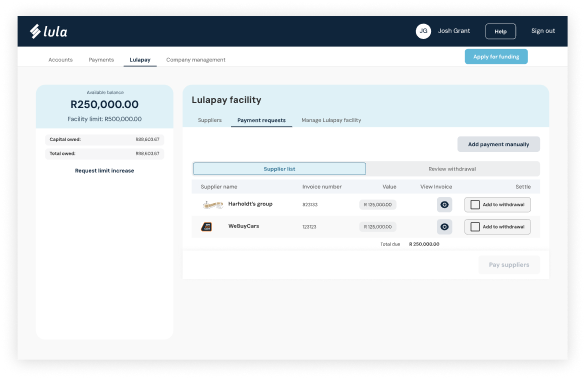
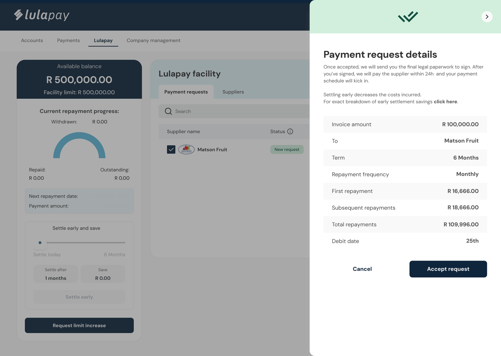
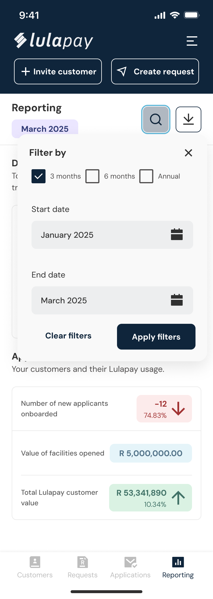
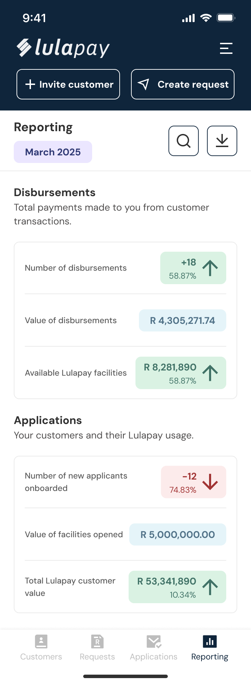
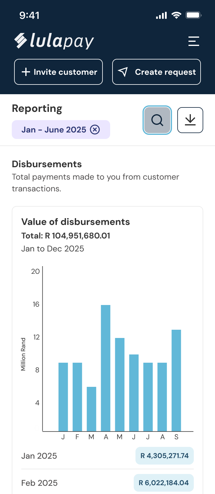
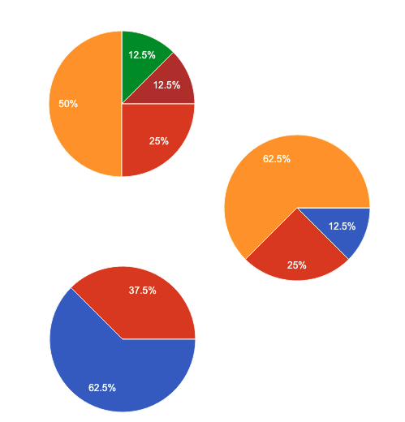
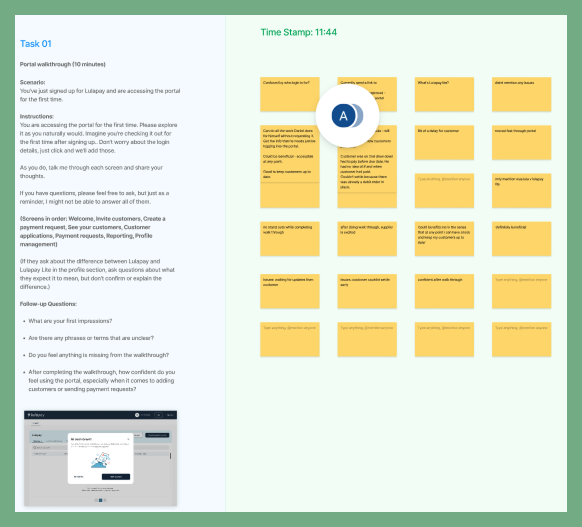

B2B BNPL, but make it sexy & simple
Lulapay is Lula's B2B Buy Now, Pay Later solution and was the company's fastest-growing product, at a time when B2B BNPL barely existed in South Africa. A supplier sends their customer a payment request, and the customer pays with Lulapay. The supplier gets paid without having to offer credit of their own. The customer gets the stock, tools or supplies they need to do the job now, and repays over time from a facility of up to R5 million. Put simply, the supplier gets paid and the customer gets to work.
For five years, all of it ran on a Google Form, spreadsheets and a very patient support team.
- Before and after
- 5 years on a Google Form and spreadsheets, replaced by 2 self-service portals for suppliers and customers, on desktop and mobile web
- My role
- With my PM on leave for most of the project, I covered the product side too: functional calls, QA tickets and tests, and usability testing
- Validation
- 12 usability sessions; every supplier said the portal would be useful and every customer valued the guided walkthrough
- Handover
- Around 50 lifecycle emails written before I left, so the product was ready to launch without me
Application Received
Before the portal, signing up meant filling in a Google Form. Everything after that, whether a balance, adding a new customer, a repayment date or a cost breakdown, meant contacting support during office hours and waiting for someone to build an Excel snapshot. It was out of date by the time it reached your inbox.
Not having a self-service platform was the issue that came up most. Suppliers had no quick way to see where their customers stood, and customers had no transparency on their own facility. That caused delays and frustration on both sides, and it kept the product from reaching its potential. Running everything through email for so long did leave one upside: years of unfiltered feedback on what people needed. I didn't have to guess what to build.

Pending: More Info Needed
The brief was a portal. The real problem was that suppliers and customers couldn't see or do much without the Lula team.
- Waited through long turnaround times for basic actions
- Couldn't check whether a customer had enough facility before sending a payment request
- Couldn't track payment requests or see what they owed
- Couldn't manage repayments without calling someone
Support bridged every gap by hand. That worked at the old volume but wouldn't hold up as the product grew.
How might wegive suppliers and customers more autonomy and clarity without overwhelming them on day one?
Under Review
With my PM on leave, I stepped in to take on the product responsibilities as well as the design.
Local B2B BNPL competitors barely existed, so I studied international platforms for patterns users would already recognise.
Lulapay is a credit product, and that changes what good design means. Every flow had to account for credit checks, regulation and data moving through Lula's backend, for people dealing with money they owe.
I brought engineering and QA into ideation instead of handing them finished designs, a shift-left approach. That is what made working without a PM possible. Feasibility questions were answered while ideas were still cheap to change, and I didn't need someone else to broker those conversations. I kept the VP and the client-facing teams close so we stayed aligned on outcomes.



Terms Offered
I designed two portals, each on desktop and mobile web.
Suppliers have a short, task-focused job. Adding a customer and sending a payment request are the main actions, so both can be reached from any screen. Suppliers can see each customer's status and available facility before they send a request.
Customers have an ongoing relationship with their facility, with more detail and more nuance. Onboarding collects everything credit needs upfront, so there are no follow-up requests later. After that, customers can:
- Invite suppliers
- Accept, edit or decline payment requests
- Track their facility in real time and see upcoming repayments
- Request a facility increase
Responsible lending
Regulation means a customer can be offered a different amount or terms than they applied for. I framed those outcomes positively and paired each with an explanation of why the decision was made. Customers understand the decision instead of only being told the result.
From modals to side panels
Customers need a lot of detail before agreeing to a loan, so I moved from the modals used on the supplier side to side panels. Everything they need sits in one view, without a journey that feels like it never ends.

Reporting from what we had
The business gave me its Excel sheets and little else. I turned them into supplier reporting that can be filtered by 3 months, 6 months, a year or a custom date range, and downloaded. It tracks new customers onboarded, the value of facilities opened and total customer value, each showing its change over the period.



Object 9: Supplier reporting on mobile, with filters, the monthly view and the 12-month view.
Settle early and save
Early settlement suits Lula's business model, and customers with spare cash often didn't know it was an option. A slider showing the exact saving at different points turned a hidden feature into a reason to act.
Breaking the design system on purpose
I stay close to the design system by default. In testing, users didn't read the notification colours as alerts, so I broke from the system there, documented why, and flagged the component for review.
Approved With Conditions
I ran usability testing with 12 participants, 6 suppliers and 6 customers, across a range of experience levels, industries and demographics. I wrote the script, recruited participants with the VP and customer-facing teams, facilitated every session and sent a stakeholder debrief after each test day.
usability sessions across both portals
of suppliers said the portal would be useful
of customers valued the guided walkthrough
Suppliers completed their tasks easily and were confident they would master the portal. The settle-early calculator got the strongest reaction from customers, and several asked to see the full settlement amount as well as the saving, so I added it. Both groups struggled to find more detail on status badges, and that fix went into both portals.
“It has all the little things I was worried about, the things I've been struggling with.”
Participant 2, F, 40 to 49, Gauteng
“Seeing this come to life, I think Lulapay is an awesome product, and this sort of platform will allow suppliers to track and trace what's happening on their clients' facilities. It's above the rest.”
Participant 9, M, 30 to 39, Western Cape
I handed stakeholders a summary of themes and highlights, and gave developers an implementation doc with prioritised recommendations, quick wins and a backlog for later sprints.

